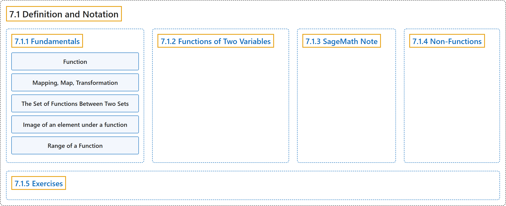

7.1 Definition and Notation
Classification

Glossary
| Term | Definition | 中文翻译 | Source |
|---|---|---|---|
| 7.1 Definition and Notation 定义与记号 |
(context) "In this chapter we will consider some basic concepts of the relations that are called functions." | （语境）“在本章中，我们将讨论被称为函数的那类关系的一些基本概念。” | Doerr & Levasseur, n.d., chapter 7, para. 1 |
| 7.1.1 Fundamentals 基础 |
(No definition) | （无定义） | Doerr & Levasseur, n.d., subsection 7.1.1 |
| Function 函数 |
"A function from a set \(A\) into a set \(B\) is a relation from \(A\) into \(B\) such that each element of \(A\) is related to exactly one element of the set \(B\text{.}\) The set \(A\) is called the domain of the function and the set \(B\) is called the codomain." | 从集合 \(A\) 到集合 \(B\) 的函数是一个从 \(A\) 到 \(B\) 的关系，使得 \(A\) 的每个元素都恰好与集合 \(B\) 的一个元素相关。集合 \(A\) 称为该函数的定义域，集合 \(B\) 称为陪域。 | Doerr & Levasseur, n.d., Definition 7.1.1 |
| Mapping, Map, Transformation 映射、变换 |
"The terms mapping, map, and transformation are also used for functions." | 映射（mapping、map）和变换（transformation）这些术语也用来指函数。 | Doerr & Levasseur, n.d., subsection 7.1.1, para. 10 |
| The Set of Functions Between Two Sets 两个集合之间的函数集 |
"Given two sets, \(A\) and \(B\text{,}\) the set of all functions from \(A\) into \(B\) is denoted \(B^A\text{.}\)" | 给定两个集合 \(A\) 和 \(B\)，从 \(A\) 到 \(B\) 的所有函数的集合记作 \(B^A\)。 | Doerr & Levasseur, n.d., Definition 7.1.5 |
| Image of an element under a function 元素在函数下的像 |
"Let \(f:A \rightarrow B\text{,}\) read “Let \(f\) be a function from the set \(A\) into the set \(B\text{.}\)” If \(a \in A\text{,}\) then \(f(a)\) is used to denote that element of \(B\) to which \(a\) is related. \(f(a)\) is called the image of \(a\text{,}\) or, more precisely, the image of \(a\) under \(f\text{.}\) We write \(f(a) = b\) to indicate that the image of \(a\) is \(b\text{.}\)" | 设 \(f:A \rightarrow B\)，读作“设 \(f\) 是从集合 \(A\) 到集合 \(B\) 的函数”。若 \(a \in A\)，则用 \(f(a)\) 表示 \(B\) 中与 \(a\) 有关系的那个元素。\(f(a)\) 称为 \(a\) 的像，更准确地说，称为 \(a\) 在 \(f\) 下的像。我们记 \(f(a) = b\) 来表示 \(a\) 的像是 \(b\)。 | Doerr & Levasseur, n.d., Definition 7.1.7 |
| Range of a Function 函数的值域 |
"The range of a function is the set of images of its domain. If \(f:X \rightarrow Y\text{,}\) then the range of \(f\) is denoted \(f(X)\text{,}\) and \(f(X) = \{f(a) \mid a \in X\} = \{b \in Y \mid \exists a \in X\textrm{ such that } f(a) = b\}\text{.}\)" | 函数的值域是其定义域的像的集合。若 \(f:X \rightarrow Y\)，则 \(f\) 的值域记作 \(f(X)\)，并且 \(f(X) = \{f(a) \mid a \in X\} = \{b \in Y \mid \exists a \in X\textrm{ such that } f(a) = b\}\)。 | Doerr & Levasseur, n.d., Definition 7.1.8 |
| 7.1.2 Functions of Two Variables 二元函数 |
(context) "If the domain of a function is the Cartesian product of two sets, then our notation and terminology changes slightly." | （语境）“若函数的定义域是两个集合的笛卡尔积，我们的记号和术语会略有变化。” | Doerr & Levasseur, n.d., subsection 7.1.2, para. 1 |
| 7.1.3 SageMath Note SageMath 注记 |
(context) "There are several ways to define a function in Sage." | （语境）“在 Sage 中定义函数有好几种方式。” | Doerr & Levasseur, n.d., subsection 7.1.3, para. 1 |
| 7.1.4 Non-Functions 非函数 |
(context) "We close this section with two examples of relations that are not functions." | （语境）“我们用两个不是函数的关系的例子来结束本节。” | Doerr & Levasseur, n.d., subsection 7.1.4, para. 1 |
| 7.1.5 Exercises 练习 |
(No definition) | （无定义） | Doerr & Levasseur, n.d., subsection 7.1.5 |
References
Doerr, A., & Levasseur, K. (n.d.). Applied discrete structures. Retrieved October 28, 2026, from https://discretemath.org/ads/index-ads.html